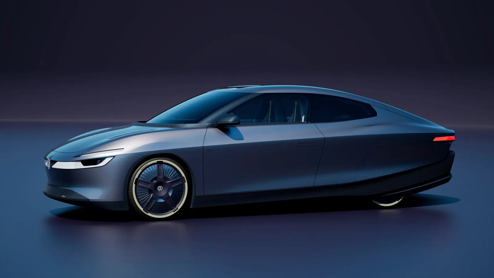
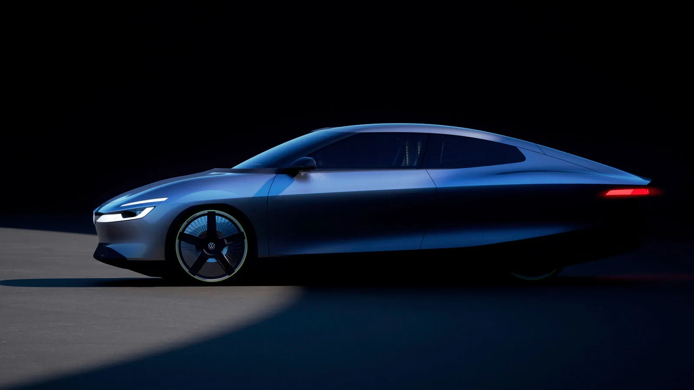
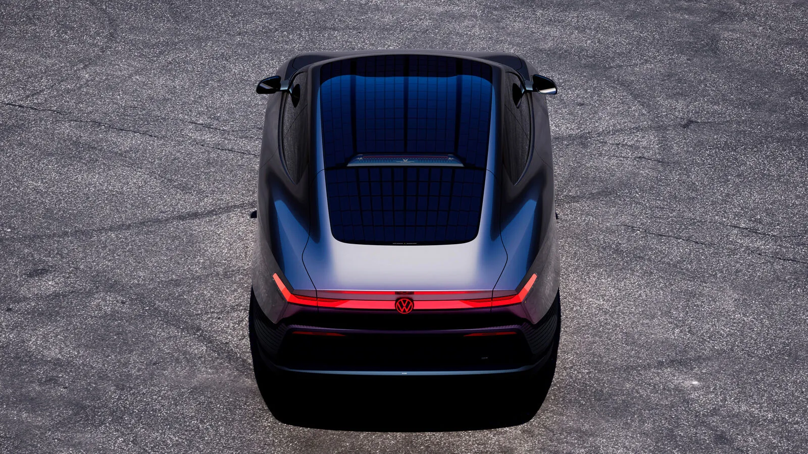
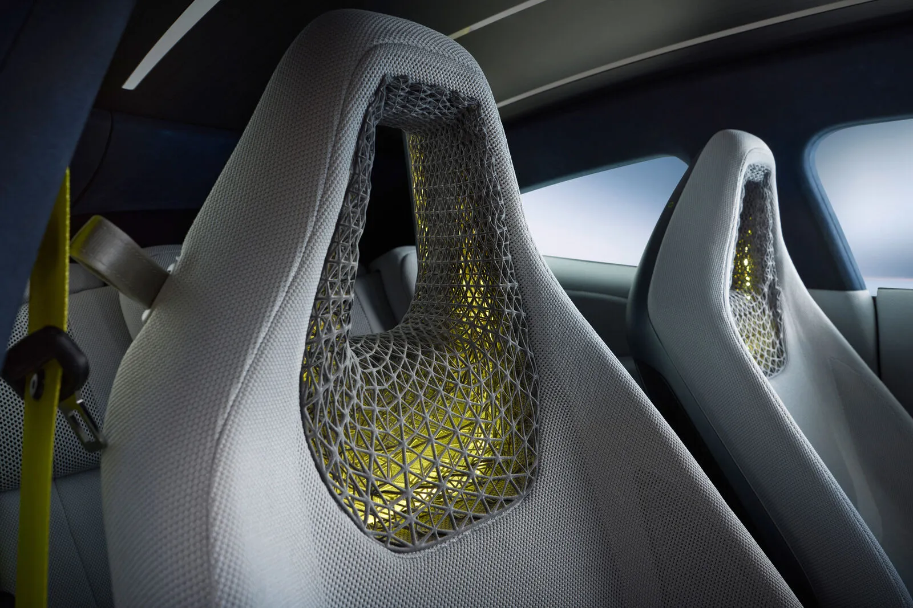

▲ 폭스바겐 미션 이피션시. 공기저항계수 0.158Cd로 도로주행 가능 차량 중 세계 기록을 세웠다 ⓒ Volkswagen
물방울을 닮은 차체 하나가 단 한 번의 충전으로 서울-부산을 왕복하고도 남을 거리를 달렸다.
폭스바겐의 초고효율 콘셉트카 미션 이피션시(Mission Efficiency)가 독일 볼프스부르크에서 오스트리아 빈까지 1,278.36km를 단 1회 충전으로 완주하며 세계 기록을 세웠다. 앞서 티저 단계에서 베일에 가려졌던 공기저항계수(Cd)도 0.158이라는 구체적 수치로 공식 확정됐다. 카가이 보도와 폭스바겐 공식 발표를 종합해 이번 콘셉트카의 실체를 정리했다.
1. 도로주행 차량 중 가장 매끈한 차체
공기저항계수 0.158Cd. 폭스바겐은 이 수치가 "도로 주행이 허가된 차량 중 세계에서 가장 낮은 공기저항계수"라고 공식 발표했다. 앞서 티저 단계에서는 정확한 수치가 공개되지 않은 채 메르세데스-벤츠 EQXX(0.17Cd)나 폭스바겐 XL1(0.19Cd) 같은 기존 초고효율 차량들을 넘어설 것이라는 전망만 나왔는데, 실제로는 이들을 모두 밑도는 수치로 확정됐다.
이 기록은 물방울(티어드롭) 형태의 차체, 액티브 에어 플랩, 완전히 덮인 뒷바퀴, 하부를 통째로 감싼 언더커버 설계, 그리고 프레임리스 윈도우와 차체에 통합된 도어 핸들이 함께 만들어낸 결과다. 전면 투영 면적은 2.08㎡에 불과하다.

▲ 물방울을 닮은 유선형 실루엣이 0.158Cd라는 공기저항계수 세계 기록을 만들어냈다 ⓒ Volkswagen
2. 볼프스부르크에서 빈까지, 1,278km 실주행
수치만 좋은 콘셉트카가 아니라는 걸 증명하려 실제로 달렸다. 미션 이피션시는 독일 볼프스부르크에서 오스트리아 빈까지 1,278.36km 구간을 단 한 번의 충전만으로 완주했다. 평균 속도는 시속 67.72km, 최고 속도는 138km/h를 기록했다.
| 항목 | 기록 |
|---|---|
| 총 주행거리 | 1,278.36km |
| 평균 속도 | 67.72km/h |
| 최고 속도 | 138km/h |
| 전비(충전손실 미포함) | 6.89kWh/100km |
| 전비(충전손실 포함) | 7.51kWh/100km |
| 이상적 조건 전비 | 6.48kWh/100km(약 68km/h 정속 주행 시) |
| 도착 시 잔여 주행거리 | 약 164km |
도착 시점에 계기판에는 여전히 164km를 더 달릴 수 있는 배터리가 남아 있었던 것으로 전해졌다. 실제 필요했던 것보다 훨씬 여유 있게 완주했다는 의미로, 조건에 따라 1,400km 이상도 가능했을 것이라는 해석이 나온다.
3. 배터리·모터는 오히려 소박하다
기록의 비밀은 큰 배터리가 아니라 낮은 소모량에 있다. 미션 이피션시에는 54.9kWh(순용량) 배터리와 99kW(135마력) 전기 모터가 탑재됐다. 이는 폭스바겐의 소형 전기차 ID. Polo에 쓰이는 모터를 그대로 가져온 것으로, 전륜구동 MEB+ 플랫폼 기반이다.
📍 배터리를 키우지 않은 이유
일반적으로 주행거리를 늘리려면 배터리 용량을 키우는 게 손쉬운 방법이다. 하지만 미션 이피션시는 배터리 용량은 준중형급 수준으로 유지하면서, 공력 설계와 경량화로 소모 전력 자체를 낮추는 방향을 택했다. 54.9kWh라는 상대적으로 작은 배터리로 1,278km를 주행했다는 것은, 같은 배터리를 가진 일반적인 전기차 대비 훨씬 적은 전력으로 이 거리를 달렸다는 뜻이다.

▲ 유리 루프와 트렁크 리드에 통합된 370W 태양광 시스템. 조건에 따라 하루 최대 30km의 추가 주행거리를 만들어낸다 ⓒ Volkswagen
4. 지붕 위 태양광, 그리고 탄소섬유 차체
루프와 트렁크 리드에는 태양광 패널이 통합됐다. 출력은 370W로, 폭스바겐에 따르면 계절과 지역, 날씨 조건에 따라 하루 최대 30km까지 실주행 거리를 늘려주는 효과가 있다. 장거리 완주 기록에서 태양광이 얼마나 기여했는지는 별도로 명시되지 않았지만, 맑은 날씨의 유럽 도로에서 의미 있는 보탬이 됐을 것으로 추정된다.
경량화도 핵심 전략 중 하나다. 차체는 알루미늄 구조에 탄소섬유강화플라스틱(CFRP)과 아라미드 복합소재를 결합해 만들어졌다. 전장 4,775mm, 전고는 1,392mm에 불과해 세단보다 훨씬 낮은 실루엣을 갖췄다. 2+2 시트 구성에 적재공간은 481리터로, 콘셉트카치고는 실용성도 어느 정도 갖췄다.
✅ 미션 이피션시가 콘셉트카에 그치지 않을 수 있는 이유
· 배터리·모터는 양산 예정 모델(ID. Polo)의 부품을 그대로 활용 — 완전한 신규 개발이 아님
· 폭스바겐이 이를 "양산 준비 단계에 가까운 전기차(near-production electric car)"로 소개
· 극단적 공력 설계 요소 중 일부(언더커버, 액티브 에어 플랩 등)는 이미 양산차에도 부분 적용된 전례가 있음

▲ 격자형 3D 프린팅 구조를 적용한 경량 시트. 무게를 줄이면서도 필요한 구조 강도를 확보하는 방식이다 ⓒ Volkswagen
5. 티저에서 실체로 — 5일 만의 확인
정확히 5일 전, 미션 이피션시는 아직 베일에 싸여 있었다. 티저 공개 당시에는 정확한 공기저항계수가 비공개였고, 울프스부르크~빈 구간의 완주 여부도 예고에 그쳤다. 이번 세계 최초 공개와 실주행 기록으로 그 예고가 모두 사실로 확인된 셈이다.
폭스바겐 공식 발표 원문은 뉴스룸에서 확인할 수 있다. 폭스바겐 뉴스룸 바로가기
6. 요약
폭스바겐 미션 이피션시가 공기저항계수 0.158Cd로 도로주행 가능 차량 중 세계 기록을 세우고, 볼프스부르크~빈 1,278.36km 구간을 단 한 번의 충전으로 완주했다. 54.9kWh 배터리와 99kW(135마력) 모터라는, 콘셉트카치고는 소박한 파워트레인으로 이뤄낸 결과다.
370W 태양광 시스템과 알루미늄+CFRP+아라미드 복합소재 차체가 전비 절감에 함께 기여했으며, 배터리·모터를 양산 예정 모델과 공유한다는 점에서 단순한 쇼카를 넘어 실제 양산 기술 검증에 가까운 성격을 지닌다.
폭스바겐은 이 차를 "양산 준비 단계에 가까운 전기차"로 소개하고 있어, 여기서 검증된 공력·경량화 기술이 향후 양산 모델에 어떻게 반영될지가 다음 관전 포인트다.